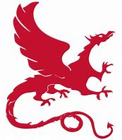

Sep'1, 2020 - Present
Member of ACM Class, Zhiyuan College. Got a distinguished GPA (94/100, Rank 1/36) during my B.S.
PDF version: [resume-2024-05.pdf].
|
June'20, 2023 - Present Research topics: Distributed system, Large Language Models (LLMs) serving system. Work with Zhenhua Han and Yuqing Yang. |
|  |
July'22, 2022 - June'23, 2023 Research topics: Deep learning compilers, Graph-level IR for deep learning (Relax IR), Deployment of Large Language Models (mlc-llm). Work with Tianqi Chen. |
|
|
Sep'1, 2020 - Present Member of ACM Class, Zhiyuan College. Got a distinguished GPA (94/100, Rank 1/36) during my B.S. |